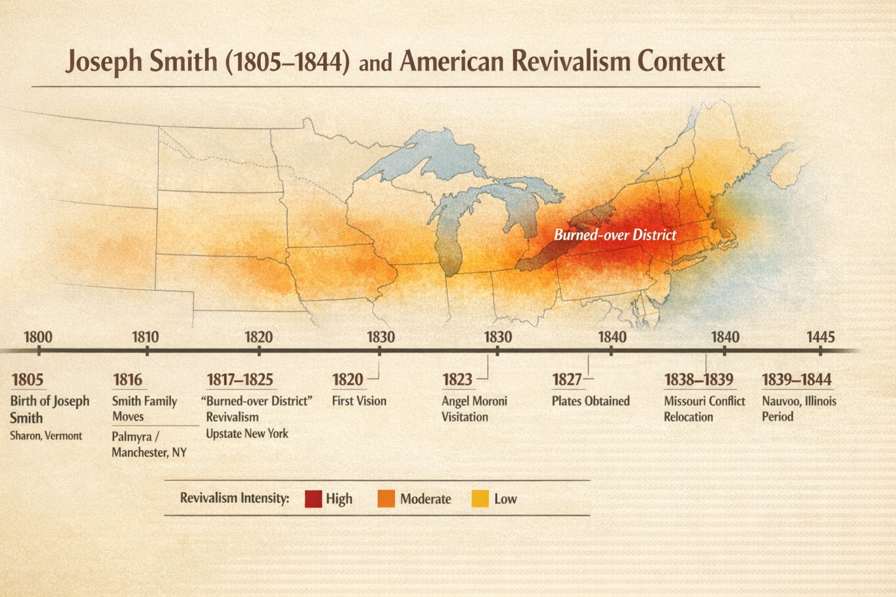

Joseph Smith (1805–1844) emerged from the "Burned-Over District" of upstate New York, a region so named for the intense waves of religious revivalism that swept through it during the Second Great Awakening (1817–1825). This period of heightened religious fervor, characterized by camp meetings, emotional conversions, and competing denominational claims, created a spiritual marketplace of ideas. Smith's First Vision in 1820 and subsequent founding of the Church of Jesus Christ of Latter-day Saints in 1830 occurred against this backdrop of religious enthusiasm and sectarian confusion, where questions of prophetic authority, biblical interpretation, and true Christianity were actively debated across western New York.